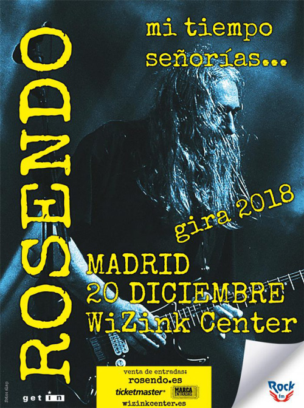
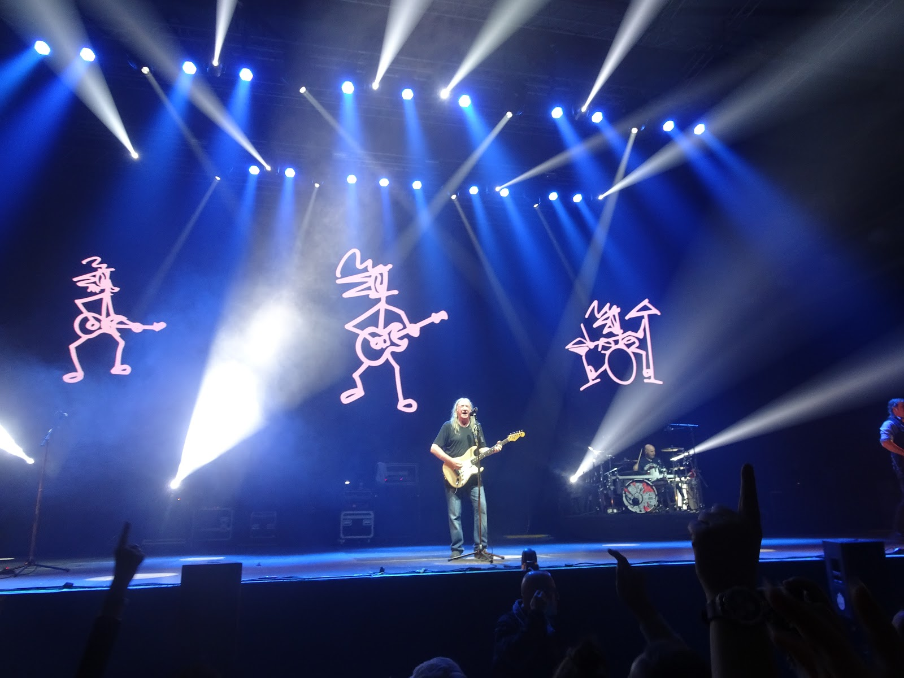

Gira "Mi tiempo, señorías…" (2018)
En 2018, Rosendo Mercado anunció su retirada de los escenarios tras más de 45 años de carrera, con una gira de despedida titulada Mi tiempo, señorías...
.
Aunque dejó de actuar en directo, el artista sigue componiendo y ha declarado su intención de publicar nueva música en un formato diferente.
El público continúa mostrando un enorme respeto y cariño por su legado.
Conciertos destacados

WiZink Center — 20/12/2018

Sant Jordi Club — 22/12/2018
Crónica de la despedida
La gira "Mi tiempo, señorías…" recorrió toda España con más de cuarenta fechas. Rosendo ofreció conciertos cargados de energía, repasando su carrera desde los tiempos de Leño hasta sus últimos trabajos en solitario. Los conciertos de Madrid y Barcelona pusieron el broche final a una trayectoria ejemplar de honestidad y coherencia artística.
En el WiZink Center de Madrid, miles de seguidores corearon sus temas más emblemáticos. Dos días después, el Sant Jordi Club de Barcelona vivió un ambiente inolvidable, con un Rosendo emocionado que agradeció al público su apoyo incondicional durante toda su carrera.
Legado y continuidad
Aunque Rosendo decidió dejar los escenarios, ha declarado públicamente que no se retira de la música. Sigue componiendo y tiene la intención de publicar nuevo material en el futuro, con una forma diferente de presentarlo. La admiración de sus seguidores se mantiene intacta y su legado como referente del rock español continúa creciendo.
Frase de cierre
"Ya no más, dejo de subirme al escenario. Pero la música sigue dentro." — Rosendo Mercado